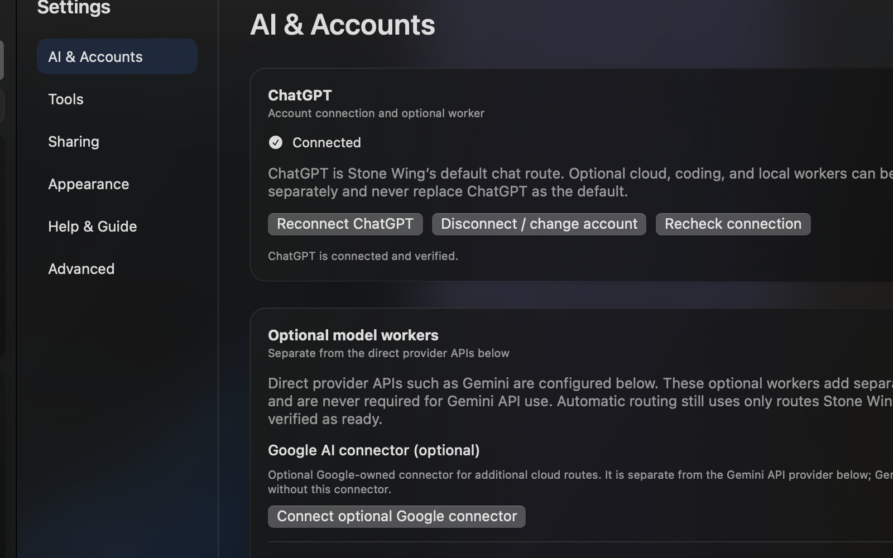
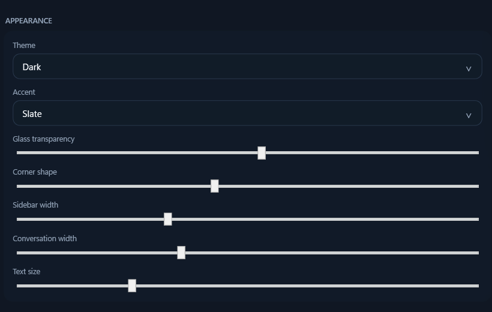

01
Use the right AI without rebuilding your workflow.
Connect supported providers and choose models manually or route work based on the task, while keeping the same project context and workspace.
Bring multiple AI providers, files, MCP tools and authorized computers into one desktop workspace. Stone Wing is built for AI that can do real work — with clear boundaries around what it can inspect, change and execute.
Mac sales, new trials and public downloads are paused while release validation continues. Join the release list for availability updates.

Stone Wing is designed around the work that happens after a good answer: choosing the right model, bringing in files and tools, reaching another computer, and deciding what AI is actually allowed to do.
Connect supported providers and choose models manually or route work based on the task, while keeping the same project context and workspace.
Bridge extends Stone Wing to authorized Macs and Windows PCs so approved files, tools and environments do not have to live on one machine.
Separate investigation from mutation, require approval where consequences begin, and verify the reached state instead of assuming success.
The Mac image shows the application under development. Neither Mac nor Windows is currently offered for new purchase or public download.


Bridge is one of Stone Wing's clearest differences from ordinary multi-model chat. Pair computers you control, then make their approved files, tools and environments available to governed workflows.
BRIDGEStone Wing governance is designed for the moment AI moves from answering into doing. The workspace keeps state, authority, execution and proof distinct so useful automation does not require surrendering control.
Stone Wing is most useful when your work spans models, files, tools or machines and you want that power without turning every provider into a separate workflow.
Keep multiple providers available without treating every model as a separate workspace.
Bring code, files, tools and computer environments into governed model-assisted work.
Move between research, documents, systems and client work while keeping consequential actions explicit.
Use Bridge when the files or tools you need live somewhere other than the machine in front of you.
This comparison is about workflow shape, not a claim that every product in a category has identical capabilities.
| Workflow need | Stone Wing | Typical single-provider chat | DIY multi-tool stack |
|---|---|---|---|
| Multiple AI providers in one workspace | Designed for it | Usually limited | Possible with setup |
| Files + tool context | Integrated workflow | Varies | Usually fragmented |
| Cross-computer Bridge | Built in | Not the core model | Separate remote tooling |
| Explicit action governance | Core design | Varies | Depends on every component |
| One-time purchase option | Planned, not on sale | Varies | Multiple products / fees |
| Your third-party provider accounts remain yours | Yes | Provider-specific | Yes, but dispersed |
Stone Wing was substantially developed using the same model, file, tool and computer workflow it is built to provide. That is useful evidence of the product direction — not a substitute for independent customer proof.
The Mac application is shown with real application captures. Windows remains a clearly labelled preview until it is ready.
The development workflow uses explicit state verification, approval boundaries and reached-state reporting.
Customer claims will be published when there are attributable external users and permission to quote them.
New purchases, trials and public downloads are unavailable while release validation continues. Join the list below for availability updates.
Mac sales, new trials and public downloads are paused until release acceptance is complete.
Existing customers: support and account help. For release news, join the list below.
The Windows edition is still in development. Purchasing and downloading are disabled until its release acceptance is complete.
Join the release list below for Windows availability updates.
No. Stone Wing is the desktop workspace. Third-party provider pricing, free tiers, API usage and limits remain controlled by those providers unless a checkout offer expressly says otherwise.
No. New Mac and Windows purchases and trials are paused during release validation. Existing subscribers can manage their accounts through support.
Monthly and one-time options are planned, with final prices and availability to be confirmed before sales reopen.
Bridge lets Stone Wing work with computers you authorize so approved files, tools and environments can participate in the workflow even when they are on another Mac or Windows PC.
Governance keeps investigation, authority, execution and proof distinct. In practical terms, that means consequential actions can require approval and Stone Wing can verify current and reached state instead of treating a proposed action as completed.
No new public Mac or Windows downloads are currently offered. Existing Mac customers should use the original purchase confirmation or contact support.
Use the seller contact information included with your Stripe confirmation or receipt and the instructions on the Stone Wing Support page.
Mac and Windows editions are undergoing release validation. Join the release list for verified availability.